Фина-
лист
NW '23
лист
NW '23
Wedding Awards
Northwest 2023
Northwest 2023
Сере-
бро
NW '25
бро
NW '25
Wedding Awards
Northwest 2025
Northwest 2025
800+ мероприятий
с 2011 года
с 2011 года
400+ отзывов
Живой юмор, настоящие разговоры и атмосфера, в которой комфортно вам, вашим родителям и друзьям.
Не играть весь день роль идеальных молодожёнов, а прожить его своими.
Чтобы за одним столом можно было и посмеяться до слёз, и вдруг поговорить о действительно важном.
Юмор, который не требует выключать голову.
Живой, возникающий здесь и сейчас, без чужих шуток, принесённых с чьей-то другой свадьбы.
Никто не тянет вас к микрофону и не решает за вас, что сегодня будет весело, а что нет.
Музыка и атмосфера, под которую действительно хочется танцевать, а не отсиживаться за столом.
Шоурил и живые моменты с настоящих свадеб.
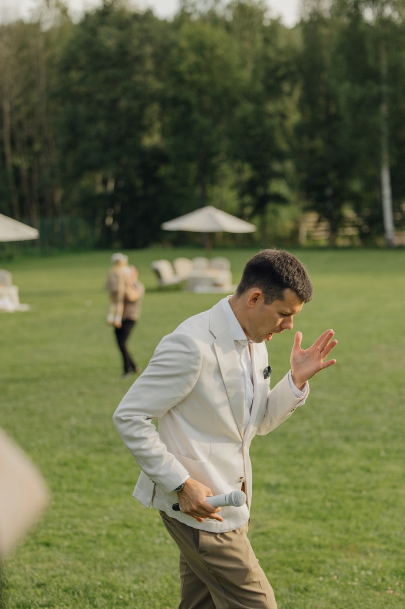
01 RecГлавное о том, как я веду, за несколько минут
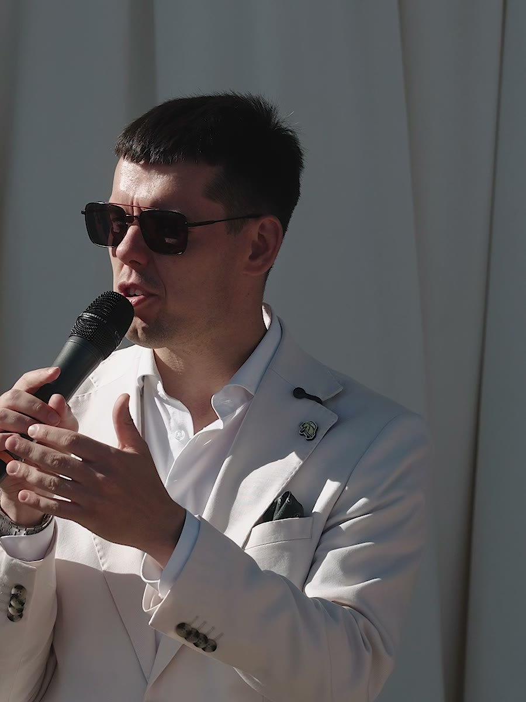
02Живые моменты выездной регистрации
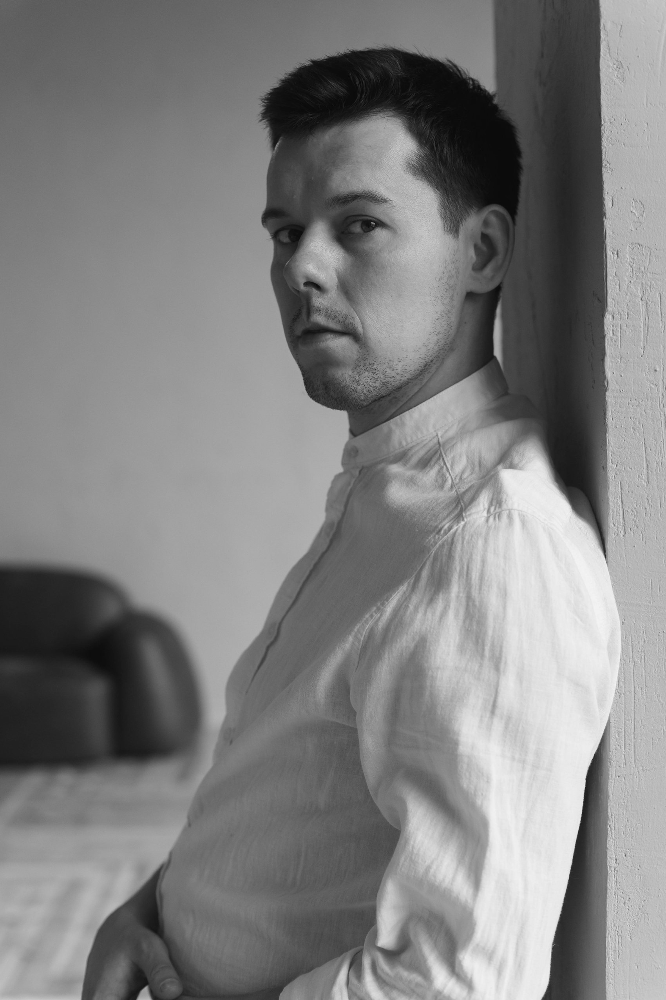
За годы работы, сотни мероприятий, несколько выступлений «у первых лиц» (сам в шоке), финал Wedding Awards Northwest в 2023-м и серебро в 2025-м.
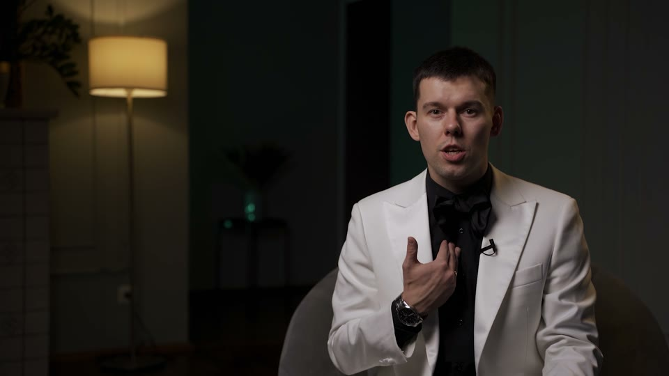
Каково это, оказаться по другую сторону свадьбы
Пару лет назад я сам стал женихом, и решил пройти этот путь до конца, а не наблюдать со стороны. Оказалось, выбрать оттенок столовых приборов, задача не проще, чем вести вечер на 150 человек. А вопрос «зачем звать тётю Катю» волнует не только гостей.
Опыт «с другой стороны» изменил мою программу: называть каждого гостя по имени, слушать и рассказывать истории, обязательно говорить «спасибо» родителям, и быть на празднике другом, а не функцией с микрофоном.
Перед каждым праздником вникаю в историю пары: как познакомились, что было важного на пути друг к другу, кого обязательно нужно упомянуть. Узнаю, как зовут маму и лучшую подругу, и те мелочи, которые знают только близкие, и аккуратно вплетаю это в программу, а не в дежурные фразы. Поэтому гости потом говорят: «интеллигентный ведущий», то есть внимательнее, а не громче.
Опыт с 2011 года, это не про отсутствие страха, а про то, что выход есть из любой ситуации. Я уже сто раз в этом убеждался.
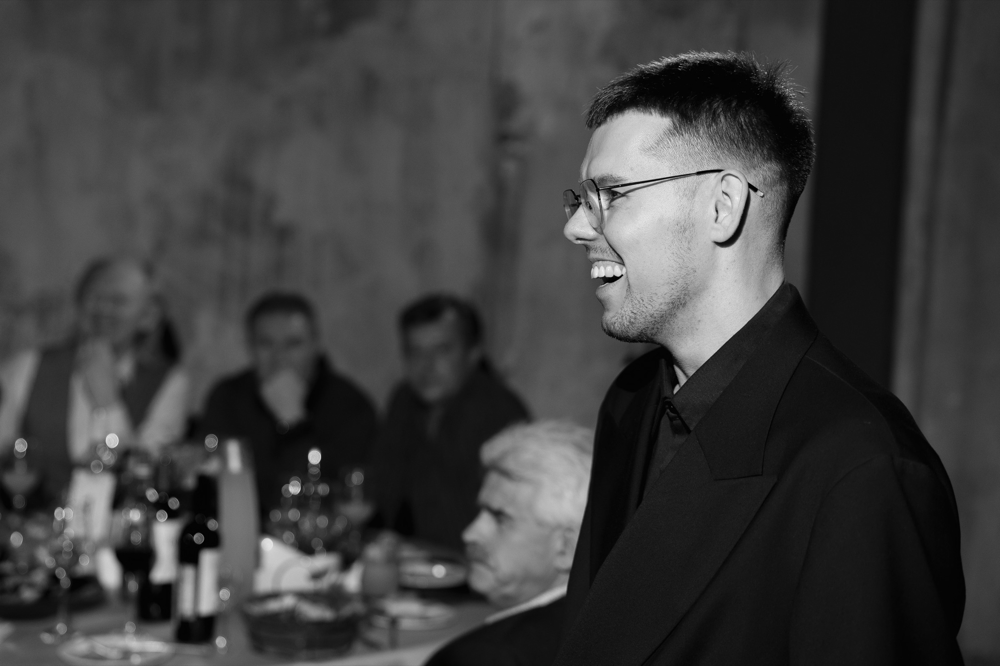
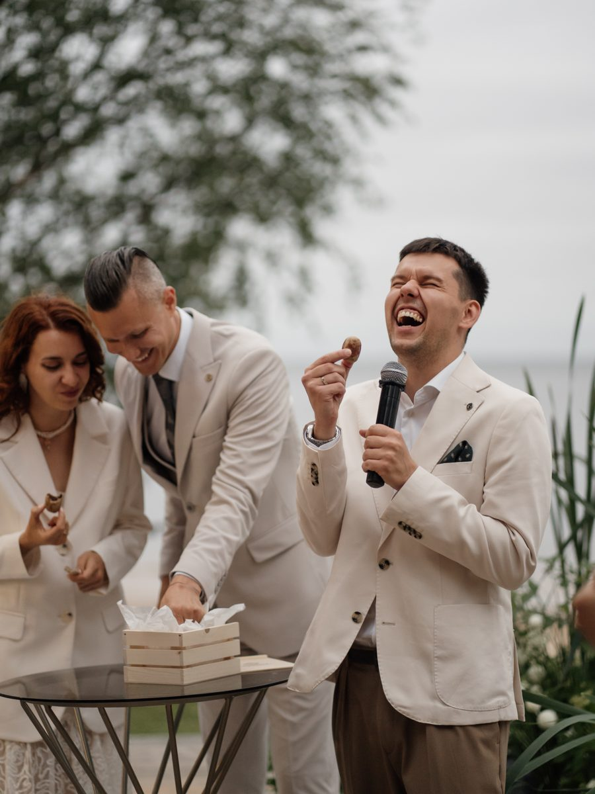
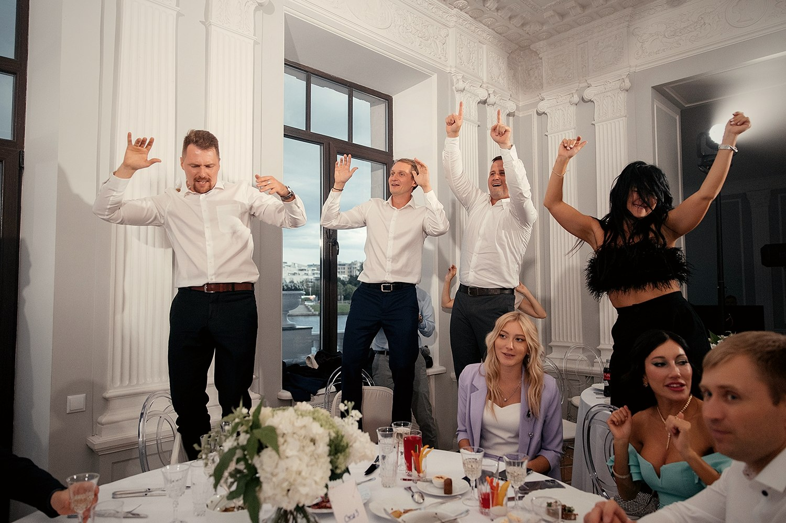
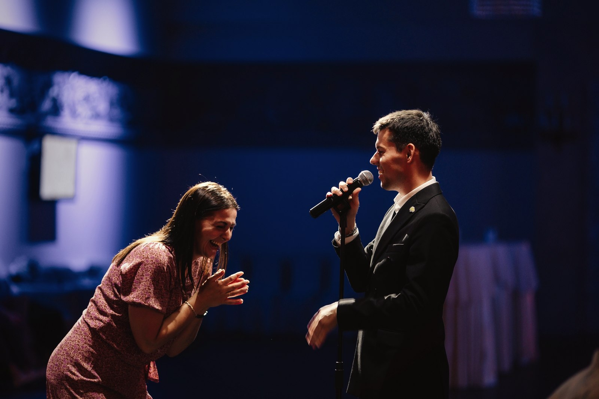
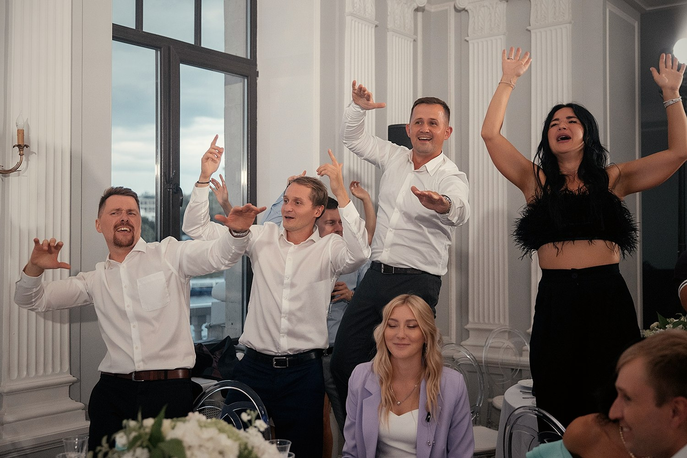
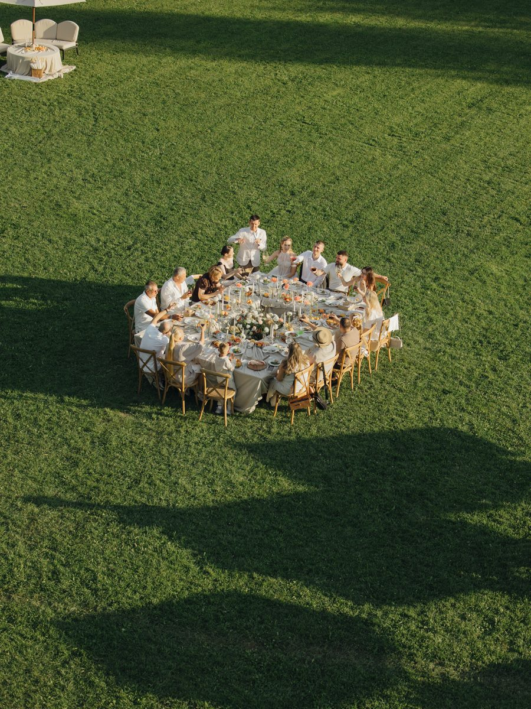
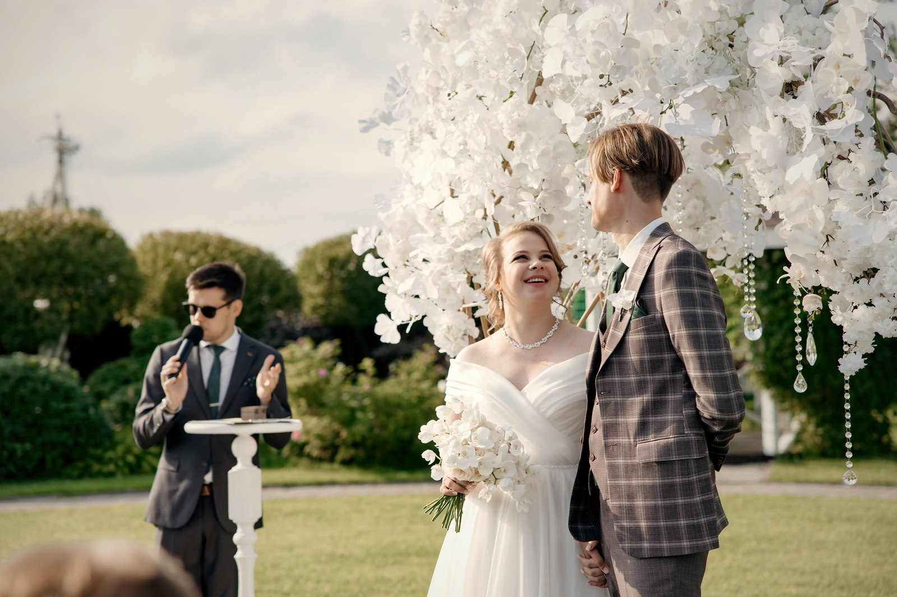
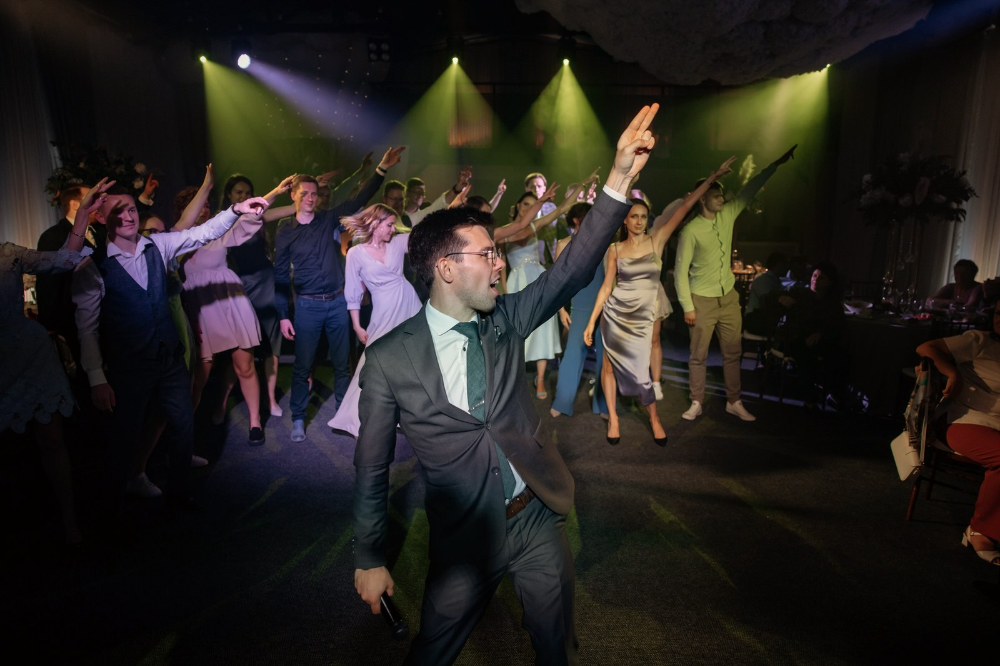
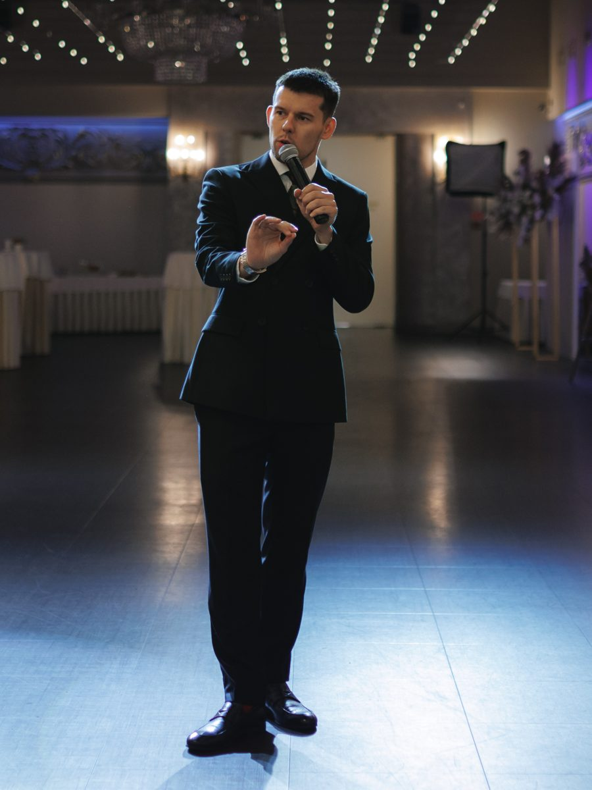
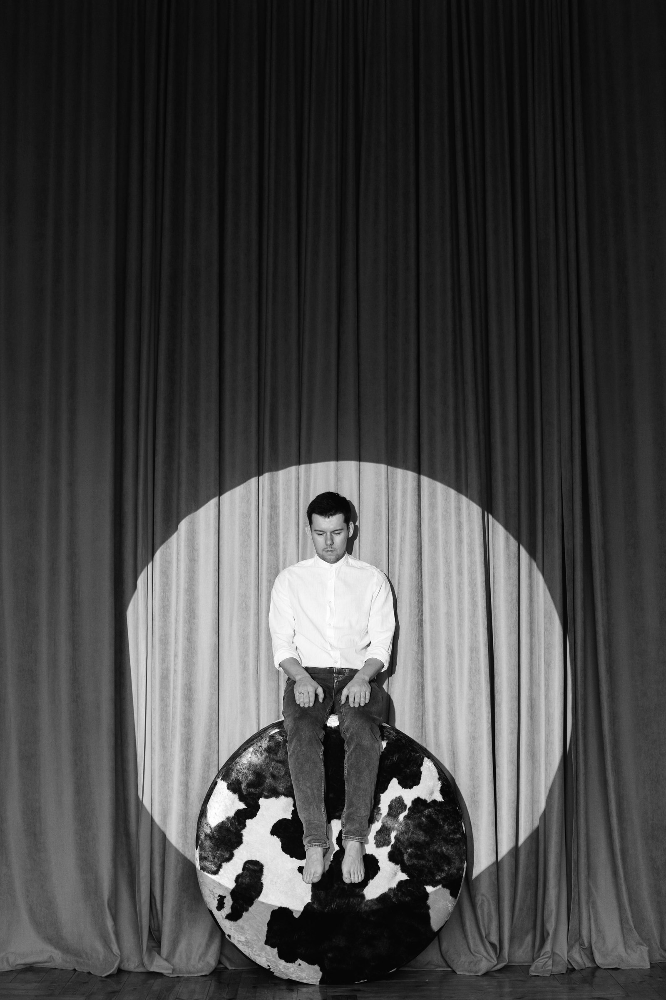
Иногда мы так торопимся, что пропускаем важные моменты. Сегодня, точно не пропустим.
Тимофей Арапов, ведущий свадеб и мероприятий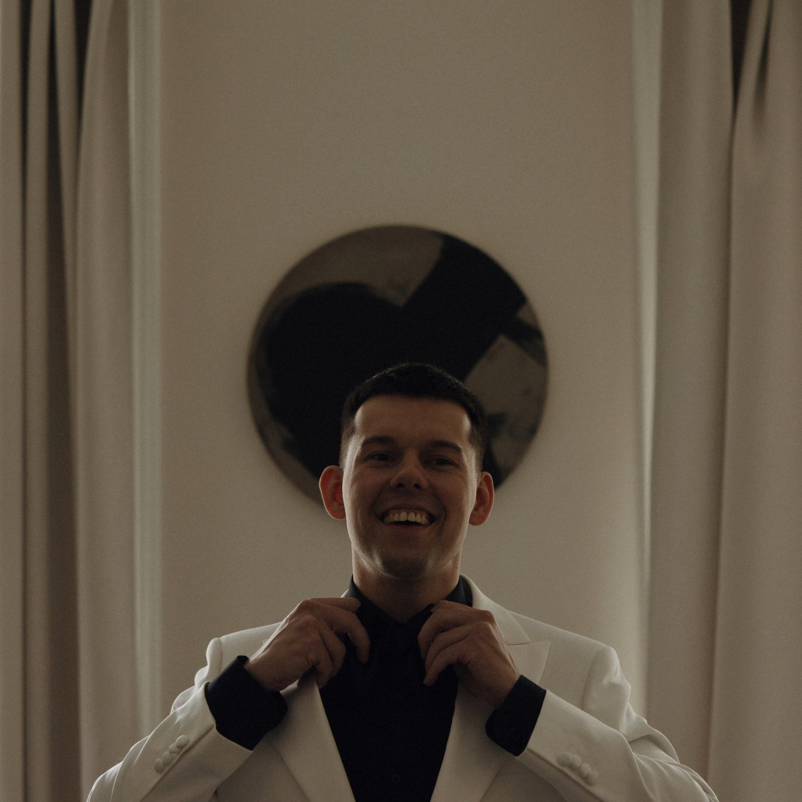
Тимофей АраповПрофессиональную базу и умение держать зал я оставил себе. А вот бесконечную череду конкурсов, почти нет.
Вникаю в историю пары: как познакомились, кого обязательно отметить, как зовут маму и лучшую подругу, и использую эти детали в программе, а не общие фразы.
Говорю с гостями, а не просто вызываю их к микрофону по пунктам программы. Лучшие моменты вечера часто начинаются с чьей-то простой истории.
Никого не тяну к микрофону силой. Каждый сам решает, включаться или наблюдать.
Хорошим кино, разговорами по душам, семьёй, свободой. Мне интереснее придумать момент под вашу семью, чем принести ещё один «авторский конкурс».
Место, куда хочется возвращаться в любой день.
Не люблю, когда всё расписано по минутам, ни в жизни, ни на свадьбе.
Особенно старое итальянское кино. Оттуда чувство юмора и лёгкость, а не из шоу.
Один настоящий разговор ценнее десяти вежливых.
Автодом, дорога, новые города. И каждый год ненадолго к морю.
Собственный дом, который строю сам, по шагам.
От первого разговора до дня свадьбы, вот что происходит на каждом шаге.
До подписания договора открыто рассказываю, как строится программа, показываю примеры. Вы делитесь пожеланиями, и вместе понимаем, подходим ли друг другу.
Договор и 15% от гонорара. Дата закрепляется только за вами. Остаток, в день мероприятия.
Истории, люди, музыка, идеи и то, что важно именно вам.
Отвечаю на организационные вопросы с момента брони и до свадьбы. Да, даже если стало тревожно в воскресенье вечером.
За неделю до свадьбы сверяем все детали и правим программу.
Чёткий тайминг. Вы всегда знаете, что будет дальше.
Обсуждаем, что для вас лично важно сохранить, без шаблона «как у всех».
Каждые 35–40 минут, танцы и отдых, музыка подбирается под вкус пары.
Ваши друзья и бабушка могут сидеть рядом, и никому не должно быть неловко, не через отдельные «конкурсы для бабушек», а через разговор и внимание к каждому.
Корпоративы и юбилеи, с тем же подходом.
Никого не тяну к микрофону силой. Чувствую настроение зала и предлагаю участие там, где оно возникает само.
Нет. Я не в центре, я рядом. Главные здесь вы и ваши люди, а моя работа, помочь этому дню случиться.
За годы бывало разное: свадьба без жениха, отключение света посреди вечера, двадцать минут держал зал перед выходом артиста. Справлялись, справимся и в этот раз.
Да. Ваши друзья и бабушка вполне могут оказаться за одним разговором, дело не в конкурсах, а в том, чтобы поговорить с каждым.
«У нас будет ведущий, но у нас не будет тамады», эту разницу родители пары поняли только после самого праздника.
Гости, которых спросили о свадьбе уже спустя пару месяцев, независимо друг от друга говорили: казалось, что Тимофей знал их целую вечность, настолько легко он переходил от шуток к тёплым моментам.
На что обратить внимание и какие вопросы задать на первой встрече, чтобы потом не жалеть о выборе.
Идеи подарков, которые удивят и запомнятся надолго.
Я рядом, чтобы помочь вам сделать этот день вашим. Расскажите о своём празднике, отвечу и подскажу, как лучше начать подготовку.